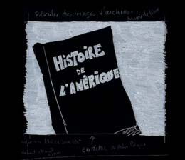
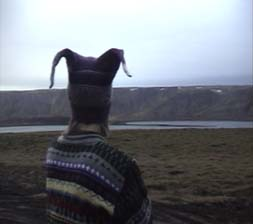
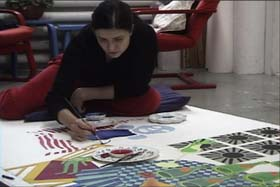
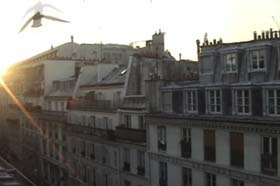
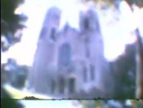

| Tank | instant inflation | America mon amour |
 |
 |
 |
| Tank: A very short video describing the so called "1st world's" mentality, the reattribution of the word 'terrorist' and the dead left in the wake of our brave new-world crusade. Let us civilized people just pretend that September 11 had no political relevance until 2001. |
Instant inflation: A DIY video on economic disaster |
America mon Amour: video concerning a history of the american continent and the treatment of the Autochthon. |
| Anna-Marie Giersdottir, Trailer | Pirjetta Brendar, Trailer | Fatima Augusto, Trailer |
|  |  |  |
| Anna-Marie Giersdottir, Icelandic artist, weaving in protest, suggesting a new coat of arms for iceland incorporating the logo of a controversial energy company |
Pirjetta Brendar, Finish artist describers her focus and interests |
Fatima Augusto, Paris based artist paints and philosophize |
| harlap time | Bell mistake (1 and 2) | |
|  | ||
| Harlap time: Technique: place 'time' in the 'Z' dimension and apply alpha channel to specific intensities to create a 3D volume of time. All scenes are produced using medical imaging software. |
Bell mistake 1 and 2: Two 8mm films testing a broken 8mm camera. odd results, some parts are even interesting. |
{kind=link}
{kind=link}
{kind=link}
{kind=link}
{kind=link}
{kind=link}